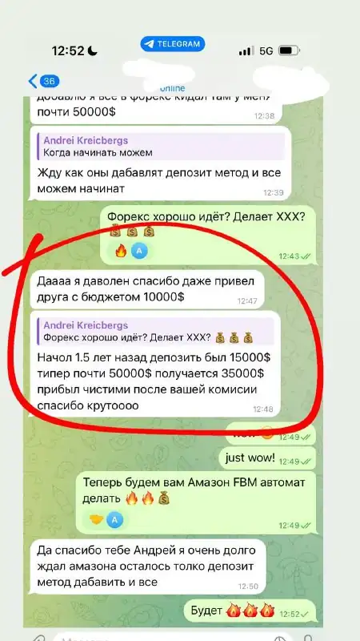
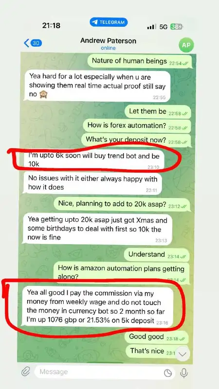
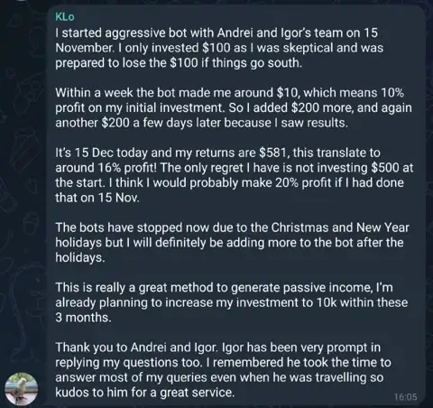
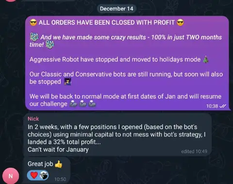
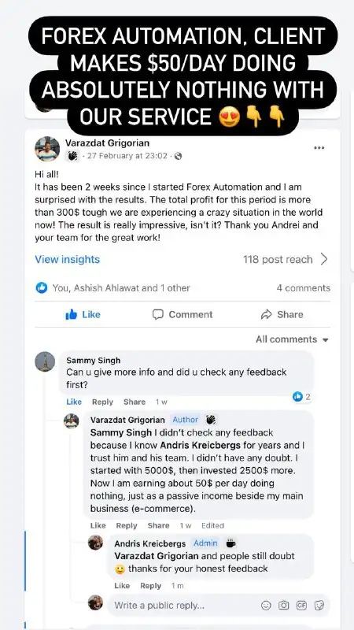

Apa kata
klien kami
Tangkapan layar pesan dan laporan klien tanpa diedit sejak 2022. Ketuk gambar untuk membukanya dalam ukuran penuh.

Terima kasih, semuanya baik dan kami puas. Kami berencana menambah deposit. Minggu lalu kami bayar biaya $124, jadi penghasilan kami sama; minggu ini sedang profit.19.11.2026

Iya, bulan pertama bagus: sekitar $120 setelah bagi hasil dari investasi $1,000, kira-kira 12% bersih.18.11.2026

Iya, saya puas, terima kasih, saya bahkan mengajak teman. Saya mulai 1.5 tahun lalu dengan deposit $15,000, sekarang hampir $50,000: profit bersih $35,000 setelah biaya kalian.13.11.2026

Profitnya masuk ke rekening bank saya sore ini, padahal baru withdraw kemarin. Saat ditanya berapa yang sudah dia dapat dari layanan ini: $15,000.13.11.2026

Update lagi: 4.76%, bagus gila. Andai saya taruh 10K di sini. Copy trade manual cuma dengan $100, rugi orang yang nggak mau coba.13.11.2026

Laporan untuk klien dengan biaya $311.67 untuk periode ini. Klien: "Sudah diterima, saya kirim dan nanti saya kirim tangkapan layarnya. Sudah transfer $312, terima kasih!"13.11.2026

Saya ikut program forex automation sejak September lalu dan sangat senang dengan hasilnya: konsisten, biasanya lebih dari 10% per bulan, dan withdraw kapan saja tanpa masalah.13.11.2026

Hari yang luar biasa, lihat total profit saya sejauh ini cuma dari mata uang, dan 1.26% dalam sehari, keren seperti biasa.13.11.2026

Awalnya saya skeptis, apalagi dengan jumlah besar, tapi hasilnya luar biasa buat saya: $5K saya menghasilkan $350–450 per bulan. Anda pegang kendali penuh atas uang Anda, bukan orang lain.13.11.2026

Semuanya baik, nggak ada masalah, selalu puas dengan hasilnya. Dalam 2 bulan di bot mata uang saya naik 1,076 GBP, atau 21.53% dari deposit 5K.13.11.2026

Terima kasih, untuk sekarang dana saya biarkan di SmartStrike. Saat ditanya apakah dia dapat uang dari forex automation: "Iya, dapat."05.11.2026

Akun klien di hari pertama: +$961.13 (+9.63%) dari deposit sekitar $10,000. Klien: "Mengesankan! Saya baru login ke akunnya, ini bukan tangkapan layar."14.07.2026

Suka banget! 21.69% di SmartStrike dan 4.6% di IronPips. Sejauh ini sangat terkesan.25.04.2026

Saya sudah 2 tahun bersama kalian, tentu saja saya dapat uang!25.04.2026

Saya sangat puas dengan perkembangan trading-nya: sekarang jadi penghasilan mingguan yang konsisten dan bisa diandalkan. Manajemen risikonya top.10.12.2025

Profit lebih dari $400 dalam 19 hari dengan investasi awal cuma $1K, tanpa perlu turun tangan. Saya juga dapat lebih dari $500 dengan sistem SmartStrike dari investasi awal $2,400.10.12.2025

Saya sangat senang dengan hasilnya, dan juga dengan profesionalisme timnya.10.12.2025

Kami sudah bekerja sama hampir sebulan, dan sistem yang ditawarkan sesuai harapan kami. Timnya paham betul pekerjaannya. Kami berharap kerja sama ini berlangsung lama.08.12.2025

Iya, dapat uang: sudah sekitar 42.76% sejak deposit pertama. Saya berpikir untuk deposit sedikit lagi, lihat apakah profitnya bisa naik.18.10.2025

Dapat lumayan: 7.54%, kalau saya nggak salah. Tangkapan layar menunjukkan riwayat trade di emas.30.09.2025

Saya ingin berterima kasih kepada tim atas layanannya! Selama sekitar 30 hari berlangganan, hasilnya stabil sekitar 25%.26.09.2025

Sejauh ini saya sudah dapat 200% sejak Juni 2024. Walaupun investasinya kecil, profit saya tetap banyak.26.09.2025

Iya, minggu pertama dan luar biasa: dari $1,022 jadi $1,536 USD, profit $515. Suami saya juga sedang buka akun dan kami berencana menambah dananya.02.08.2025

Halo! Saya lihat sudah dapat 37.6%. Bersihnya 18.8%, $189.92 dari deposit $1,000.22.07.2025

Sejauh ini lancar! Saya berpikir untuk nggak menarik uang beberapa bulan ke depan dan membiarkannya bertambah. Saat ini kira-kira total sudah 37%.22.07.2025

Iya, hasilnya benar-benar bagus: hampir $700 di akun demo dalam 2 minggu.02.07.2025

Sudah jalan, sudah +$20. Terima kasih, senang saya bisa ketemu kalian.30.04.2025

Semuanya baik: sekitar 1% per hari, naik sekitar $2K sejak kami mulai dengan bot baru sebulan lalu. Rasanya seperti uang gratis, lebih bagus dari tabungan mana pun.26.02.2025

Saya ikut program Forex Automation sejak Januari dan dapat hasil secara konsisten; timnya selalu bisa dihubungi. Saya berencana menambah deposit sampai $20,000. Semuanya sangat sederhana, uang jalan otomatis, saya rekomendasikan.18.01.2025

Minggu yang hebat, tim! Sempat ada drawdown besar tapi pulih dengan bagus. Di bawah ini konfirmasi pembayaran bagi hasil saya ($1,121.44). Terima kasih untuk kalian semua!18.01.2025

$2,500 ditarik dari akun konservatif. Suka banget program ini! Saya investasi $35K dan mulai rutin withdraw.15.05.2024

Dananya sudah masuk! Saya baru saja withdraw $9K lagi. Layanan kalian luar biasa; kalian membantu saya tetap bertahan di masa sulit, terima kasih.14.05.2024

Saya dapat profit 40% dari 1 Maret sampai 1 Mei, gila banget. Saya kirim $4.2K lagi, jadi sekarang ada $8K di dalam.11.05.2024

Profit akun mingguan $301.29. Klien: "Minggu ini bagus, nanti biayanya saya urus begitu sempat."11.05.2024

Suka banget dengan trading Forex ini. Saya tambah $1K pada 25 Maret dan sudah dapat $338. Luar biasa, terima kasih banyak.08.05.2024

Waktu terjadi drawdown, kalian bangkit dengan bagus. Saya akan menambah dana.03.04.2024

Saya mulai 17 Januari 2024 dengan $1,000 dan sekarang punya $1,186, hampir 12% profit bersih dalam 5 minggu.04.03.2024

Mulai 22 Januari 2024 dengan deposit $21,500, lalu deposit saya gandakan jadi $43,000. Saldo sekarang $48,500, naik $5,500.02.03.2024

Bot forex-nya sekarang jalan cukup bagus: saya mulai dengan $150 dan deposit saya sekarang $185.22. Itu +23% dalam sekitar satu setengah bulan; sangat puas dengan layanannya.28.02.2024

Layanannya sejauh ini bagus banget! Saya ingin deposit lagi secepatnya. Layanan kalian harusnya dikenal di seluruh dunia.10.02.2024

Mantap! Senang bayar ke kalian. Ini tangkapan layar konfirmasi pembayaran biaya, terima kasih!31.01.2024

Semuanya bagus, jalan seperti jam dan saya sangat puas. Saya menemukan kesempatan dapat 20% per bulan dari modal saya, terima kasih!27.01.2024

Biasanya saya skeptis, tapi saya gabung Desember lalu dengan $200. Hari ini akun saya $430, lebih dari dua kali lipat modal awal dalam 1.5 bulan.27.01.2024

Saya ingin merekomendasikan Forex Automation. Saya mulai dengan $100 untuk mengecek, dan ternyata benar-benar jalan: hampir +20% dalam kurang dari sebulan. Saya akan terus pakai layanan ini.26.01.2024

Saya mulai dengan $100 karena skeptis. Dalam seminggu bot menghasilkan sekitar 10%, jadi saya tambah lagi. Sebulan kemudian hasil saya $581, sekitar 16%. Cara yang bagus untuk dapat passive income.15.12.2023

Dalam 2 minggu, dengan beberapa posisi yang saya buka berdasarkan pilihan bot dengan modal minimal, saya dapat total profit 32%. Nggak sabar menunggu Januari.14.12.2023

Menurut saya layanannya luar biasa. Yang paling saya hargai adalah komunikasinya: kalian selalu memberi kabar dan menjawab pertanyaan saya. Saya ingin berinvestasi lebih banyak bersama kalian.11.12.2023

Sudah lama saya cari passive income dan sempat ragu. Saya coba dengan $100 dan sama sekali nggak menyesal: dalam 4 bulan saya pelan-pelan menumbuhkan akun sampai $6,300. Terima kasih atas kesempatan ini!11.11.2023

Robot agresif kalian benar-benar buas, gas terus!01.11.2023

Selamat siang, semuanya baik, dan 2–3 minggu terakhir benar-benar bagus, terima kasih. Semuanya mantap, saya puas.01.11.2023

Iya, agak lebih lambat dari perkiraan saya, tapi di mana lagi bisa dapat uang tambahan seperti ini tanpa melakukan apa-apa?16.06.2023

Saya sudah mencoba layanan trading forex ini dan dapat profit hampir sejak hari pertama. Saya rekomendasikan: mulai cuma $100 dan setup-nya gampang banget.16.06.2023

Klien setelah semua trade ditutup dan dana ditarik: terima kasih atas kerja kerasnya, saya akan kembali lagi.10.02.2023

Yes! Wah, kemarin hari yang luar biasa! Seru banget, terima kasih semuanya. Kejutan yang hebat.10.02.2023

Saya pakai layanan Forex Automation. Saya mulai dengan $5,000, lihat ternyata benar-benar jalan, lalu menambah investasi. Sekarang $16,000 sedang dipakai; ini passive income dan saya puas dengan semuanya.17.12.2022

Baru mulai, baru minggu pertama, tapi kelihatannya sangat menjanjikan: $700 dalam sehari. Komunikasinya juga bagus. Tangkapan layar akun menunjukkan +$777.92 (+7.77%).16.10.2022

Saya sudah pakai layanan ini lebih dari empat bulan: legit, andal, dan layak dipercaya. Ini passive income, persis seperti yang dijanjikan.02.09.2022

Saya sudah pakai 4 bulan dan rata-rata dapat $200/minggu. Sepenuhnya otomatis, saya bisa menarik modal awal kapan saja, dan hanya saya yang mengendalikan dananya.02.09.2022

Laporan mingguan untuk klien: profit $57.30, $282.07, dan $48.36 di tiga akun (konservatif, mata uang, logam). Klien membalas bahwa biayanya sudah dikirim.02.09.2022

Awalnya saya kira ini penipuan lagi, tapi saya putuskan untuk coba. Setelah 45 hari saya menambah deposit, dan satu-satunya penyesalan saya adalah nggak gabung lebih awal.02.09.2022

Dapat $449 minggu ini. Saya sudah lama jadi pelanggan; semuanya pasif dan saya nggak perlu menyentuh apa pun.02.09.2022

Saya bergabung beberapa hari lalu dan sudah dapat profit pertama. Semua trading dikerjakan untuk saya, saya nggak perlu melakukan apa-apa. Tangkapan layar akun menunjukkan +$137.72 (+1.37%).02.09.2022

Chat dengan klien: total profit periode ini $457, dan klien mengonfirmasi laporannya.02.09.2022

Saya sudah ikut program ini lebih dari 5 bulan: saya menyediakan deposit dan tim mengembangkan akun saya dengan robot trading. Saya konsisten dapat $1,000–1,800 per bulan.02.09.2022

Programnya benar-benar jalan dan saya nggak perlu melakukan apa pun. Dalam 4 hari terakhir total profitnya $232 dari investasi 5000.02.09.2022

Iya, kami dapat uang dan ini keren banget.02.09.2022

Sudah 2 minggu sejak saya mulai, dan total profit periode ini lebih dari $300. Sekarang saya dapat sekitar $50 per hari sebagai passive income di luar bisnis utama saya.02.09.2022

Nggak nyangka saya dapat profit $487 dalam seminggu tanpa melakukan apa-apa. Investasi terbaik saya sejauh ini!02.09.2022
Mulai dengan bertanya
Kirim pesan lewat Telegram atau WhatsApp: kami akan menyarankan broker untuk negara Anda dan model risiko yang cocok, menyiapkan demo 14 hari, dan membantu Anda memulai.
Kirim pesan lewat Telegram